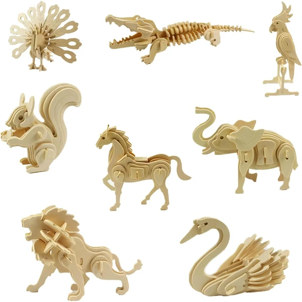
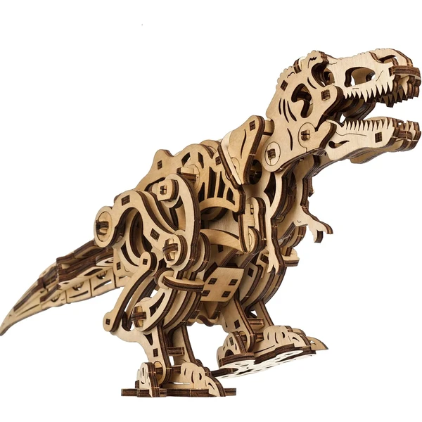

✨ Guía especial
Puzzles 3D de animales y dinosaurios de madera: ideal para niños
Las mejores opciones y a partir de qué edad
Las mejores opciones y a partir de qué edad
Dentro de los puzzles 3D de madera, las figuras de animales y dinosaurios son de las opciones más recomendables para los más pequeños de la casa: piezas grandes, pocas unidades y un componente educativo que va mucho más allá del simple juego. En esta guía repasamos las mejores opciones de ambas categorías y te ayudamos a elegir según la edad.
Los puzzles 3D de animales en madera están pensados, en su mayoría, para los primeros contactos de un niño con este tipo de juguete: figuras sencillas de leones, elefantes o aves, con estructuras de pocas piezas grandes que se pueden montar en pocos minutos y sin apenas ayuda de un adulto.
Más allá del entretenimiento, trabajan directamente la motricidad fina y el reconocimiento de formas, y son un punto de partida habitual antes de pasar a modelos con más piezas. Al ser figuras reconocibles y de tamaño pequeño, también son una opción de regalo muy económica frente al resto del catálogo de puzzles 3D.

Animales Ver en Amazon →El T-Rex es, con diferencia, el dinosaurio más popular dentro de los puzzles 3D — probablemente el más reconocible para cualquier niño gracias al cine y a los documentales. También hay modelos de Velociraptor y otras especies clásicas, aunque mucho menos habituales de forma individual.
Al igual que en los de animales, la madera es el material predominante en esta categoría: piezas grandes, montaje sencillo y un resultado final lo bastante llamativo como para quedar expuesto en una estantería una vez terminado. Es de los temas que más entusiasmo genera entre los niños de 5 a 10 años, y suele funcionar muy bien como puerta de entrada antes de pasar a modelos con licencia (Jurassic World, por ejemplo) si el interés por los dinosaurios se mantiene.

T-Rex Ver en Amazon → Velociraptor
Ver en Amazon →
Velociraptor
Ver en Amazon →
Mismo criterio que en el resto de la categoría de madera: lo que determina la edad no es tanto la temática como el número de piezas y su tamaño. Casi todos los modelos de animales y dinosaurios se mueven en el rango más sencillo:
De 4 a 7 años: entre 10 y 40 piezas grandes, montaje de pocos minutos — el rango donde entra la práctica totalidad de estas figuras.
A partir de 8 años: si el niño ya tiene experiencia previa con puzzles 3D, puede saltar directamente a modelos con licencia de dinosaurios (Jurassic World) o a temáticas con más piezas.
Si buscas más detalle sobre cómo elegir dificultad en general, lo cubrimos con más profundidad en la guía de puzzles 3D de madera.
Ambos tipos de puzzle se encuentran principalmente en Amazon, donde suele haber más variedad de figuras individuales y packs conjuntos que en tienda física.
La mayoría de estos modelos, de entre 10 y 40 piezas grandes, están pensados desde los 4-5 años. Es de los rangos de dificultad más accesibles de toda la categoría de puzzles 3D.
El T-Rex, con diferencia — es el más popular y el más reconocible para los niños. También hay modelos de Velociraptor, aunque mucho menos habituales.
Sí, es el material predominante en esta categoría, gracias a su resistencia y a que permite piezas grandes fáciles de manejar para manos pequeñas.
Principalmente en Amazon, donde hay más variedad de figuras individuales y packs conjuntos que en tienda física.
Todos los tipos, materiales, marcas y modelos según la edad.